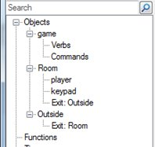
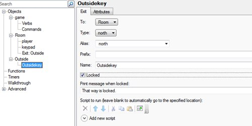
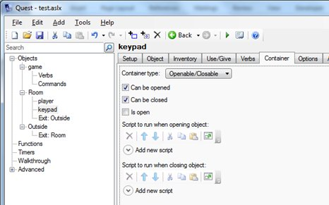
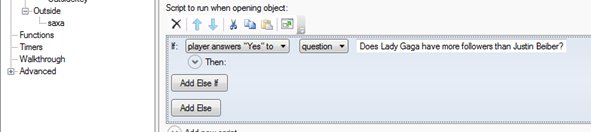
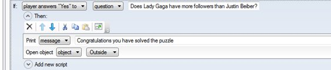
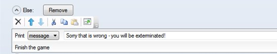
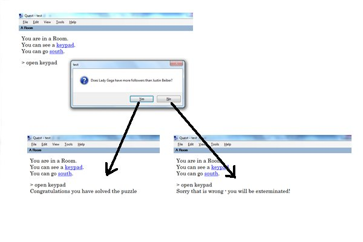

Adding a Yes/No Quiz Question
Here is a way of creating a quiz style situation
-
I have set up a room with player and keypad and Exit to the “Outside”

-
I then lock the “Outside” exit:

-
I make the keypad into a container which can be opened and closed:

-
I add a player answers Yes to script to the Script to run when opening object
-
I type in the Yes/No question that they see on the keypad:

-
I put in the answer if they choose “Yes” (the correct answer)

-
I then add the section if they say “No” (the wrong answer)

Here are the screenshots of what the game now looks like:
